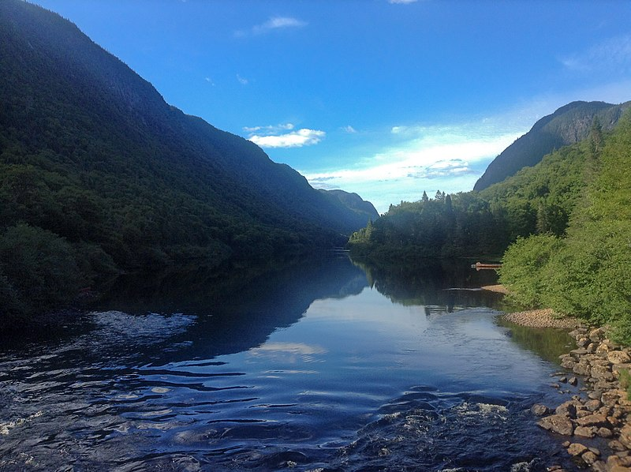
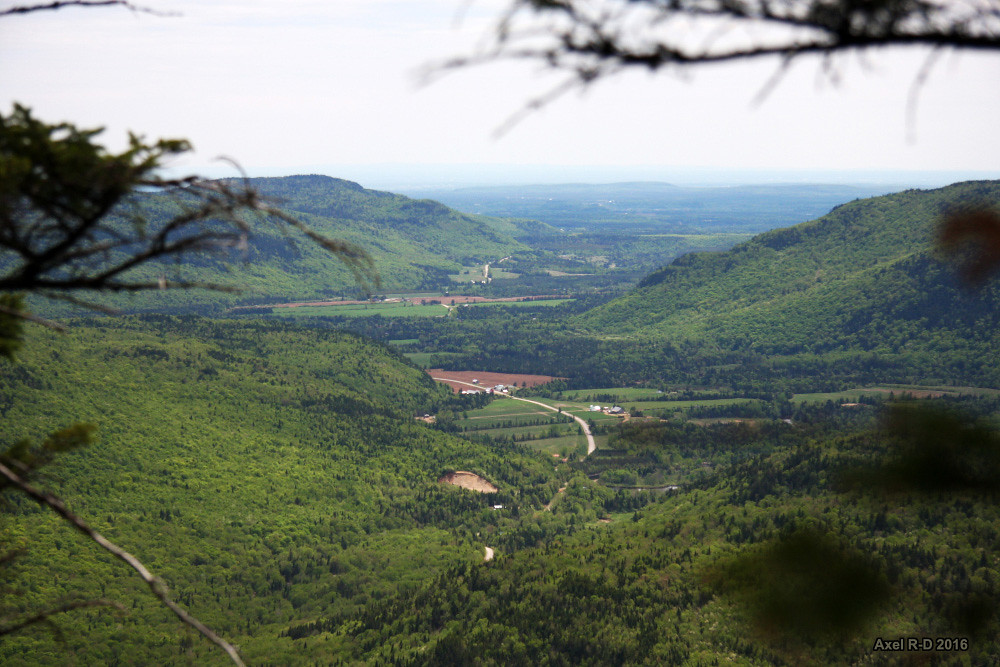
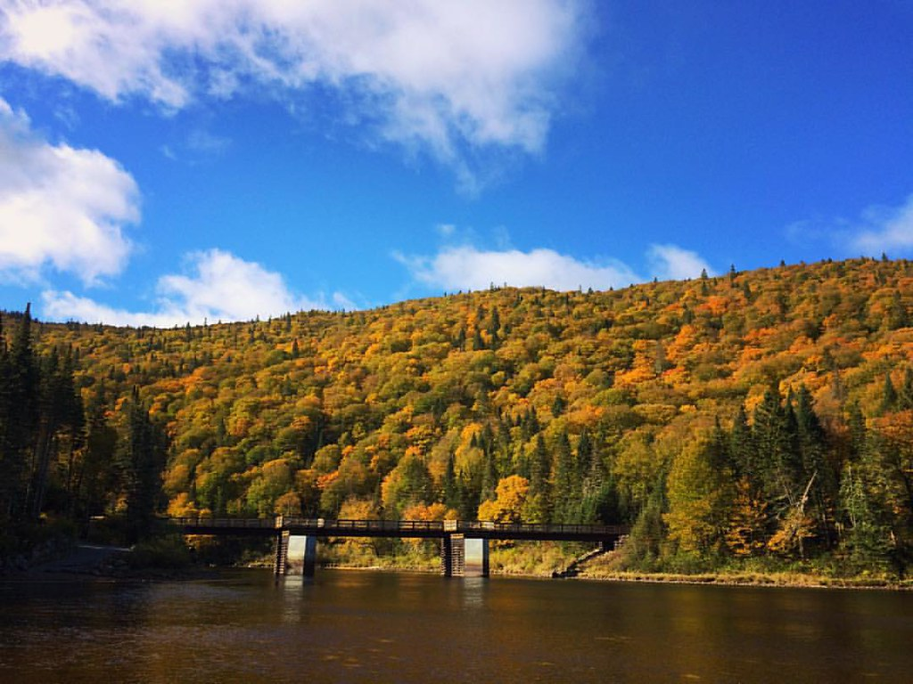
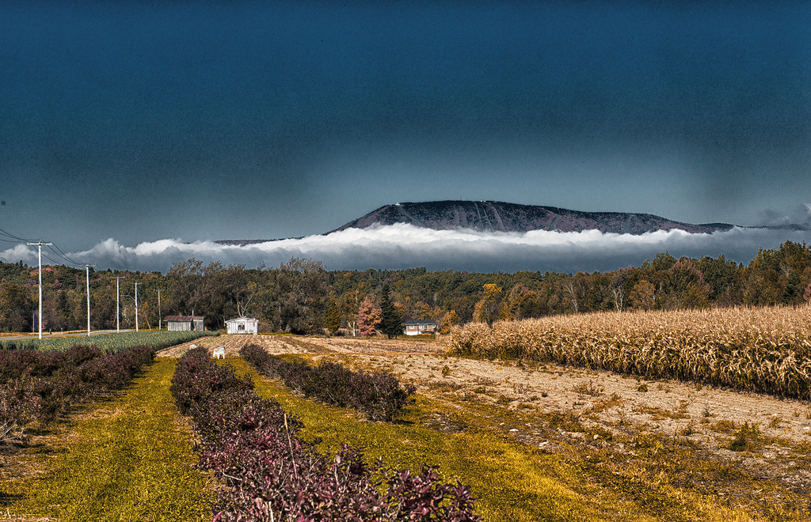
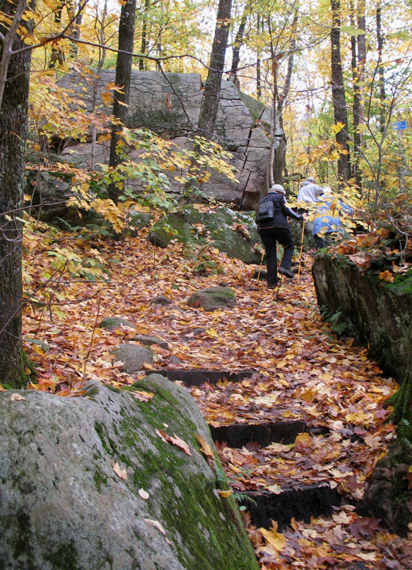

Parc national de la Jacques-Cartier
Le Parc de la Jacques-Cartier à Québec offre une immersion naturelle exceptionnelle au cœur de paysages sauvages, entre rivières et montagnes.
En savoir plusVallée du Bras-du-Nord
La Vallée du Bras du Nord, véritable havre de paix au cœur de la nature québécoise, enchante les visiteurs avec ses paysages préservés où la rivière serpente entre les montagnes, offrant une expérience de plein air inoubliable.
En savoir plusStoneham
Stoneham, joyau naturel près de Québec, offre des sentiers de randonnée pittoresques et variés, permettant aux visiteurs de découvrir la beauté des paysages forestiers québécois à toutes les saisons.
En savoir plusMont-Sainte-Anne
Le Mont-Sainte-Anne, emblème de la région de Québec, dévoile ses sentiers enchanteurs en dehors de la saison hivernale, invitant les amoureux de la nature à explorer ses pentes boisées et ses panoramas à couper le souffle tout au long de l'année.
En savoir plusMont Wright
Le Mont Wright, près de Fermont, dévoile ses sentiers de randonnée, offrant aux visiteurs l'opportunité d'explorer ses panoramas grandioses et la diversité de sa nature tout au long de l'année.
En savoir plus